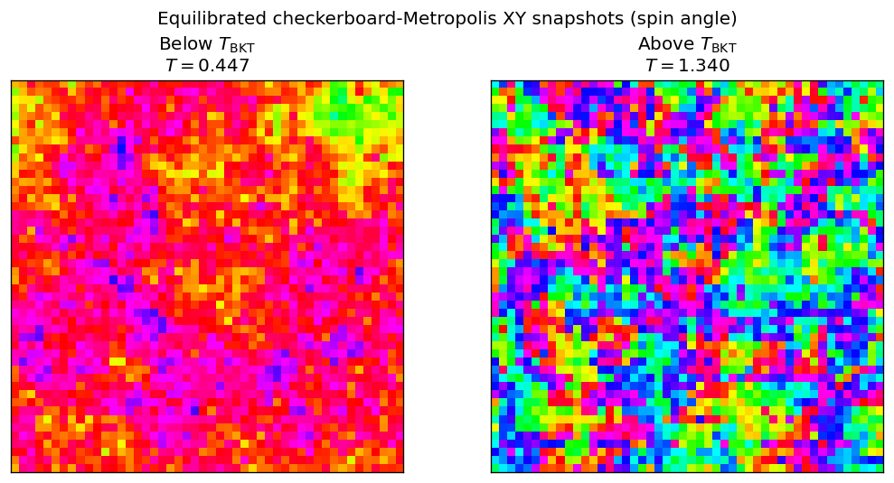
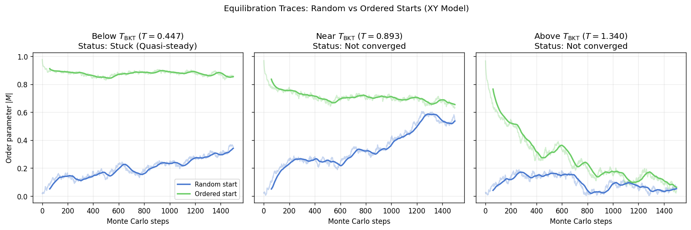
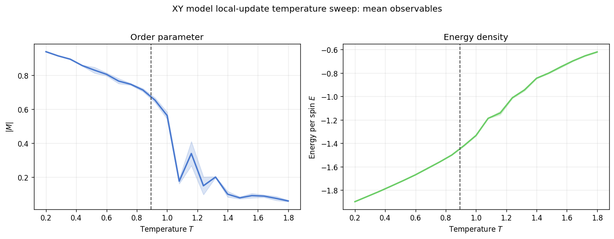
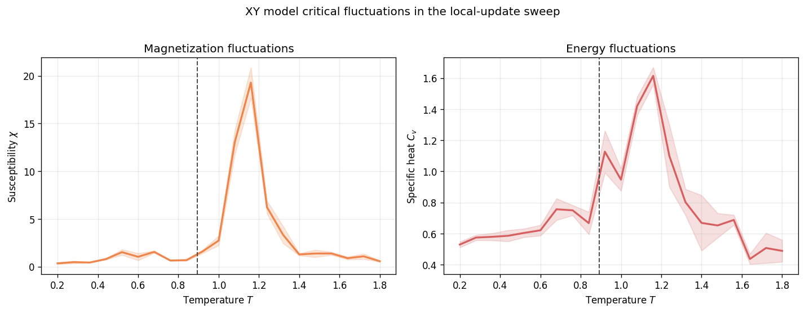
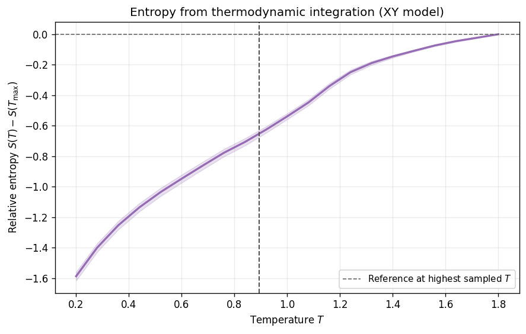
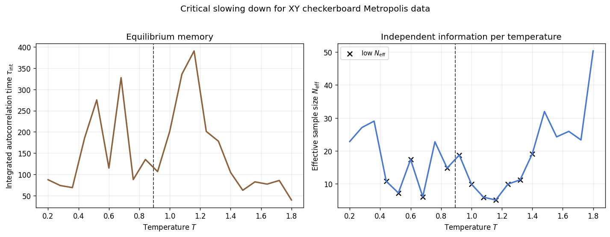
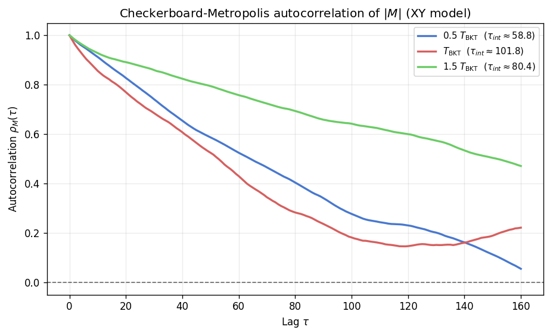

XY Model: Temperature Sweep and BKT Crossover
The two-dimensional XY model places a continuous planar spin \(\vec{s}_i = (\cos\theta_i, \sin\theta_i)\) on every site of a square lattice, coupled through \(H = -J \sum_{\langle i,j \rangle} \cos(\theta_i - \theta_j)\). Unlike the Ising model, the continuous symmetry forbids spontaneous symmetry breaking at any finite temperature (Mermin-Wagner theorem), so there is no conventional ordered phase with a nonzero magnetization [1]. Instead, the system undergoes a Berezinskii-Kosterlitz-Thouless (BKT) transition at \(T_{\mathrm{BKT}} \approx 0.893\) between a low-temperature phase with bound vortex-antivortex pairs and algebraically decaying correlations and a high-temperature disordered phase with exponential correlation decay and free vortices [2] [3] [6].
This notebook runs a thermodynamic temperature sweep through the BKT region and records the same set of observables used in the Ising sweep: magnetization, energy, susceptibility, specific heat, entropy, and integrated autocorrelation time. The BKT transition is of infinite order. The free energy has only an essential singularity at \(T_{\mathrm{BKT}}\), so the specific heat shows a smooth maximum above the transition rather than a divergence. The susceptibility, in contrast, is infinite throughout the low-temperature phase in the thermodynamic limit, and on a finite lattice it grows as \(L^{2-\eta}\) [3]. On the small lattices used here every one of these features is strongly shifted and rounded by finite size. The stored outputs come from the inline fallback (one seed, \(L = 32\)), so the numbers quoted below describe that run.
[1]:
from __future__ import annotations
from pathlib import Path
import matplotlib.pyplot as plt
import numpy as np
from scipy.stats import norm
from models.xy_model import XYSimulation
from utils.equilibration import (
_detect_quasi_steady_stuck,
estimate_relaxation_time_two_start,
ordered_start_seed,
prepare_equilibrated_simulation,
)
from utils.exceptions import ZeroVarianceAutocorrelationError
from utils.statistics import (
DEFAULT_CONFIDENCE_LEVEL,
calculate_autocorr,
summarize_entropy_observable,
)
from utils.sweep_helpers import ThermoPoint, simulate_thermo_point
T_BKT = 0.893
# Data paths are relative to notebooks/, the directory the notebook runs from.
CACHE_PATH = Path('../results/xy/temperature_sweep_data.npz')
PALETTE = {
'mag': '#4878CF',
'eng': '#6ACC65',
'chi': '#EE854A',
'cv': '#D65F5F',
'entropy': '#956CB4',
'tau': '#8C613C',
}
plt.rcParams['figure.dpi'] = 120
print(f'T_BKT (theoretical) = {T_BKT}')
print(f'Primary sweep path: {CACHE_PATH}')
T_BKT (theoretical) = 0.893
Primary sweep path: ../results/xy/temperature_sweep_data.npz
Ordered and Disordered Configurations
The XY model’s phases look quite different from the Ising case. The snapshots below show the local spin angle \(\theta_i\) on a cyclic colour scale after equilibration with checkerboard Metropolis updates on a \(48 \times 48\) lattice. At \(T = 0.5\,T_{\mathrm{BKT}} \approx 0.45\) the angle varies slowly across the lattice: most sites lie within a limited range of hues around one direction, modulated by smooth long-wavelength spin waves. At \(T = 1.5\,T_{\mathrm{BKT}} \approx 1.34\) the angle field is correlated only over a few lattice spacings, and all orientations appear in small patches.
[2]:
def _equilibrated_state(*, temp: float, size: int = 48, seed: int = 0) -> np.ndarray:
sim, _ = prepare_equilibrated_simulation(
model_cls=XYSimulation, model_kwargs={}, size=size, temp=temp,
seed=seed, chunk_size=120, max_steps=6000, detect_stuck=False,
)
sim.run(n_steps=200)
return np.array(sim.get_spin_field(), copy=True)
snapshot_temperatures = [0.5 * T_BKT, 1.5 * T_BKT]
snapshot_titles = [r'Below $T_{\mathrm{BKT}}$', r'Above $T_{\mathrm{BKT}}$']
snapshot_states = [
_equilibrated_state(temp=float(temp), seed=200 + idx)
for idx, temp in enumerate(snapshot_temperatures)
]
fig, axes = plt.subplots(1, 2, figsize=(9, 4.5))
for ax, spins, title, temp in zip(axes, snapshot_states, snapshot_titles, snapshot_temperatures, strict=True):
angles = np.arctan2(spins[:, :, 1], spins[:, :, 0])
ax.imshow(angles, cmap='hsv', vmin=-np.pi, vmax=np.pi, interpolation='nearest')
ax.set_title(f'{title}\n$T = {temp:.3f}$')
ax.set_xticks([])
ax.set_yticks([])
fig.suptitle('Equilibrated checkerboard-Metropolis XY snapshots (spin angle)', y=0.98)
fig.tight_layout()
plt.show()

Load or Compute Sweep Data
The notebook first looks for the project cache at ../results/xy/temperature_sweep_data.npz, a path relative to the notebooks/ directory from which the notebook runs. If that file contains at least ten temperature points and the required uncertainty fields, the plots are built directly from the precomputed data. The cache is produced by scripts/xy/temperature_sweep.py and records standardized uncertainty fields for every observable.
If no valid cache is available, a lightweight fallback sweep runs inline. Each temperature point goes through simulate_thermo_point, the worker used by the production sweep: a random-start and an ordered-start simulation with independent seeds evolve until their smoothed magnetization traces satisfy the two-start cross-band criterion, and the point is then measured. For the XY model quasi-steady stuck detection is switched off. The model has no metastable domain states; its slow initial
relaxation is the gradual annihilation of vortices and the growth of spin-wave order, so an early exit would only discard a run that is still relaxing. Each pair therefore runs until it converges, with a cap of 40 000 sweeps, and a point that does not converge is stored as NaN. The stored fallback uses \(L = 32\), 21 temperatures between 0.2 and 1.8, 4000 measurement sweeps, and one seed. Its results are noisy, as the later sections show, but they are sufficient to show the qualitative shape
of each observable curve.
[3]:
REQUIRED_KEYS = {
'temperatures',
'avg_m_value', 'avg_m_ci_low', 'avg_m_ci_high', 'avg_m_n_eff',
'avg_e_value', 'avg_e_ci_low', 'avg_e_ci_high',
'susc_value', 'susc_ci_low', 'susc_ci_high',
'spec_h_value', 'spec_h_err', 'spec_h_ci_low', 'spec_h_ci_high',
'tau_int',
'undefined_autocorr_flag', 'tau_interval_unstable_flag',
}
fallback_meas_steps = 4_000
fallback_size = 32
def _run_local_sweep_point(
*,
temp: float,
size: int,
meas_steps: int,
eq_probe_steps: int,
eq_max_steps: int,
seed: int,
) -> dict[str, float]:
# The production sweep worker: two-start equilibration with independent
# seeds, measurement on the start the equilibration certified, and the
# standard blocking summaries.
# The XY model has no metastable domain states, so stuck detection stays
# off and every point runs until the two starts converge.
allow_stuck = False
result = simulate_thermo_point(ThermoPoint(
temperature=temp, size=size, meas_steps=meas_steps,
eq_probe_steps=eq_probe_steps, eq_max_steps=eq_max_steps,
eq_qs_sigma_threshold=0.05, eq_qs_min_steps=1500,
qs_allow_stuck=allow_stuck, prefer_ordered_start=allow_stuck,
temperature_index=0, seed_index=0, seed=seed,
model_cls=XYSimulation, model_kwargs={},
confidence=DEFAULT_CONFIDENCE_LEVEL, derived_method='blocking', bootstrap_resamples=0,
))
if result['equilibrated_flag'] == 0.0:
# Not equilibrated within the step cap: report NaN rather than a biased value.
result = {f'{obs}_{field}': float('nan')
for obs in ('avg_m', 'avg_e', 'susc', 'spec_h')
for field in ('value', 'err', 'tau_int', 'n_eff')}
z = float(norm.ppf(0.5 + DEFAULT_CONFIDENCE_LEVEL / 2.0))
point: dict[str, float] = {}
for obs in ('avg_m', 'avg_e', 'susc', 'spec_h'):
value, err = float(result[f'{obs}_value']), float(result[f'{obs}_err'])
point[f'{obs}_value'] = value
point[f'{obs}_ci_low'] = value - z * err
point[f'{obs}_ci_high'] = value + z * err
point['avg_m_n_eff'] = float(result['avg_m_n_eff'])
point['spec_h_err'] = float(result['spec_h_err'])
point['tau_int'] = float(result['avg_m_tau_int'])
# A single run gives no interval for tau_int itself; the band collapses
# onto the point estimate instead of borrowing the error of |M|.
point['tau_int_ci_low'] = point['tau_int']
point['tau_int_ci_high'] = point['tau_int']
return point
cache_loaded = False
cache_reason = ''
requested_n_seeds = 1
retained_n_seeds = 1
if CACHE_PATH.exists():
cache = np.load(CACHE_PATH)
if REQUIRED_KEYS.issubset(set(cache.files)) and int(cache['temperatures'].size) >= 10:
temperatures = np.asarray(cache['temperatures'], dtype=float)
avg_m = np.asarray(cache['avg_m_value'], dtype=float)
avg_m_ci_low = np.asarray(cache['avg_m_ci_low'], dtype=float)
avg_m_ci_high = np.asarray(cache['avg_m_ci_high'], dtype=float)
avg_m_n_eff = np.asarray(cache['avg_m_n_eff'], dtype=float)
avg_e = np.asarray(cache['avg_e_value'], dtype=float)
avg_e_ci_low = np.asarray(cache['avg_e_ci_low'], dtype=float)
avg_e_ci_high = np.asarray(cache['avg_e_ci_high'], dtype=float)
susc = np.asarray(cache['susc_value'], dtype=float)
susc_ci_low = np.asarray(cache['susc_ci_low'], dtype=float)
susc_ci_high = np.asarray(cache['susc_ci_high'], dtype=float)
spec_h = np.asarray(cache['spec_h_value'], dtype=float)
spec_h_err = np.asarray(cache['spec_h_err'], dtype=float)
spec_h_ci_low = np.asarray(cache['spec_h_ci_low'], dtype=float)
spec_h_ci_high = np.asarray(cache['spec_h_ci_high'], dtype=float)
tau_int = np.asarray(cache['tau_int'], dtype=float)
tau_int_ci_low = (
np.asarray(cache['tau_int_ci_low'], dtype=float)
if 'tau_int_ci_low' in cache.files
else tau_int
)
tau_int_ci_high = (
np.asarray(cache['tau_int_ci_high'], dtype=float)
if 'tau_int_ci_high' in cache.files
else tau_int
)
undefined_autocorr_flag = np.asarray(cache['undefined_autocorr_flag'], dtype=np.uint8)
tau_interval_unstable_flag = np.asarray(cache['tau_interval_unstable_flag'], dtype=np.uint8)
low_effective_sample_flag = (
np.asarray(cache['low_effective_sample_flag'], dtype=np.uint8)
if 'low_effective_sample_flag' in cache.files
else np.zeros_like(temperatures, dtype=np.uint8)
)
entropy = (
np.asarray(cache['entropy_value'], dtype=float)
if 'entropy_value' in cache.files
else np.asarray(cache['entropy'], dtype=float)
)
entropy_ci_low = (
np.asarray(cache['entropy_ci_low'], dtype=float)
if 'entropy_ci_low' in cache.files
else np.asarray(cache['entropy'], dtype=float)
)
entropy_ci_high = (
np.asarray(cache['entropy_ci_high'], dtype=float)
if 'entropy_ci_high' in cache.files
else np.asarray(cache['entropy'], dtype=float)
)
confidence_level = float(cache['confidence_level']) if 'confidence_level' in cache.files else DEFAULT_CONFIDENCE_LEVEL
requested_n_seeds = int(cache['requested_n_seeds']) if 'requested_n_seeds' in cache.files else int(cache['n_seeds']) if 'n_seeds' in cache.files else 1
retained_n_seeds = int(cache['retained_n_seeds']) if 'retained_n_seeds' in cache.files else int(cache['n_seeds']) if 'n_seeds' in cache.files else 1
n_seeds = retained_n_seeds
data_source = (
f'Loaded cached sweep from {CACHE_PATH} '
f"at L={int(cache['size']) if 'size' in cache.files else 'unknown'}, "
f"{int(cache['meas_steps']) if 'meas_steps' in cache.files else 'unknown'} "
f'measurement steps, using {retained_n_seeds} retained seeds '
f'out of {requested_n_seeds} requested.'
)
cache_loaded = True
else:
n_cached = int(cache['temperatures'].size) if 'temperatures' in cache.files else 0
cache_reason = f'cache exists but only provides {n_cached} temperature points'
else:
cache_reason = 'cache file not found'
if not cache_loaded:
temperatures = np.linspace(0.2, 1.8, 21)
avg_m = np.empty_like(temperatures)
avg_m_ci_low = np.empty_like(temperatures)
avg_m_ci_high = np.empty_like(temperatures)
avg_m_n_eff = np.empty_like(temperatures)
avg_e = np.empty_like(temperatures)
avg_e_ci_low = np.empty_like(temperatures)
avg_e_ci_high = np.empty_like(temperatures)
susc = np.empty_like(temperatures)
susc_ci_low = np.empty_like(temperatures)
susc_ci_high = np.empty_like(temperatures)
spec_h = np.empty_like(temperatures)
spec_h_err = np.empty_like(temperatures)
spec_h_ci_low = np.empty_like(temperatures)
spec_h_ci_high = np.empty_like(temperatures)
tau_int = np.empty_like(temperatures)
tau_int_ci_low = np.empty_like(temperatures)
tau_int_ci_high = np.empty_like(temperatures)
spec_h_samples = np.empty((temperatures.size, 1), dtype=float)
for idx, temp in enumerate(temperatures):
point = _run_local_sweep_point(
temp=float(temp),
size=fallback_size,
meas_steps=fallback_meas_steps,
eq_probe_steps=150,
# Without stuck detection the pair runs to convergence, which near
# T_BKT takes several thousand sweeps at this size.
eq_max_steps=40_000,
seed=1_000 + idx,
)
avg_m[idx] = point['avg_m_value']
avg_m_ci_low[idx] = point['avg_m_ci_low']
avg_m_ci_high[idx] = point['avg_m_ci_high']
avg_m_n_eff[idx] = point['avg_m_n_eff']
avg_e[idx] = point['avg_e_value']
avg_e_ci_low[idx] = point['avg_e_ci_low']
avg_e_ci_high[idx] = point['avg_e_ci_high']
susc[idx] = point['susc_value']
susc_ci_low[idx] = point['susc_ci_low']
susc_ci_high[idx] = point['susc_ci_high']
spec_h[idx] = point['spec_h_value']
spec_h_err[idx] = point['spec_h_err']
spec_h_ci_low[idx] = point['spec_h_ci_low']
spec_h_ci_high[idx] = point['spec_h_ci_high']
tau_int[idx] = point['tau_int']
tau_int_ci_low[idx] = point['tau_int_ci_low']
tau_int_ci_high[idx] = point['tau_int_ci_high']
spec_h_samples[idx, 0] = point['spec_h_value']
entropy_bundle = summarize_entropy_observable(
temperatures=temperatures,
specific_heat_samples=spec_h_samples,
specific_heat_err=spec_h_err,
confidence=DEFAULT_CONFIDENCE_LEVEL,
method='blocking',
)
entropy = np.asarray(entropy_bundle['value'], dtype=float)
entropy_ci_low = np.asarray(entropy_bundle['ci_low'], dtype=float)
entropy_ci_high = np.asarray(entropy_bundle['ci_high'], dtype=float)
undefined_autocorr_flag = (~np.isfinite(tau_int)).astype(np.uint8)
rel_width = (tau_int_ci_high - tau_int_ci_low) / np.maximum(np.abs(tau_int), 1e-12)
tau_interval_unstable_flag = np.asarray(
np.isfinite(rel_width) & (rel_width > 1.0),
dtype=np.uint8,
)
low_effective_sample_flag = np.asarray(
np.isfinite(avg_m_n_eff) & (avg_m_n_eff < 20.0),
dtype=np.uint8,
)
confidence_level = DEFAULT_CONFIDENCE_LEVEL
n_seeds = 1
requested_n_seeds = 1
retained_n_seeds = 1
data_source = (
'Computed a lightweight checkerboard-Metropolis fallback sweep '
f'at L={fallback_size}, {temperatures.size} temperature points, '
f'{fallback_meas_steps} measurement steps, 1 seed (reduced for interactive runtime) '
f'because {cache_reason}.'
)
exclude_from_thermo_plots = undefined_autocorr_flag > 0
avg_m_plot = np.where(exclude_from_thermo_plots, np.nan, avg_m)
avg_m_ci_low_plot = np.where(exclude_from_thermo_plots, np.nan, avg_m_ci_low)
avg_m_ci_high_plot = np.where(exclude_from_thermo_plots, np.nan, avg_m_ci_high)
avg_e_plot = np.where(exclude_from_thermo_plots, np.nan, avg_e)
avg_e_ci_low_plot = np.where(exclude_from_thermo_plots, np.nan, avg_e_ci_low)
avg_e_ci_high_plot = np.where(exclude_from_thermo_plots, np.nan, avg_e_ci_high)
susc_plot = np.where(exclude_from_thermo_plots, np.nan, susc)
susc_ci_low_plot = np.where(exclude_from_thermo_plots, np.nan, susc_ci_low)
susc_ci_high_plot = np.where(exclude_from_thermo_plots, np.nan, susc_ci_high)
spec_h_plot = np.where(exclude_from_thermo_plots, np.nan, spec_h)
spec_h_ci_low_plot = np.where(exclude_from_thermo_plots, np.nan, spec_h_ci_low)
spec_h_ci_high_plot = np.where(exclude_from_thermo_plots, np.nan, spec_h_ci_high)
entropy_plot = np.where(exclude_from_thermo_plots, np.nan, entropy)
entropy_ci_low_plot = np.where(exclude_from_thermo_plots, np.nan, entropy_ci_low)
entropy_ci_high_plot = np.where(exclude_from_thermo_plots, np.nan, entropy_ci_high)
print(data_source)
print(f'Temperature points: {temperatures.size}')
print(
f'retained seeds = {retained_n_seeds} / requested seeds = {requested_n_seeds}, '
f'confidence level = {confidence_level:.2f}'
)
print(f'Excluded points in thermodynamic plots: {int(np.sum(exclude_from_thermo_plots))}')
Computed a lightweight checkerboard-Metropolis fallback sweep at L=32, 21 temperature points, 4000 measurement steps, 1 seed (reduced for interactive runtime) because cache file not found.
Temperature points: 21
retained seeds = 1 / requested seeds = 1, confidence level = 0.68
Excluded points in thermodynamic plots: 0
Convergence Diagnostics
The two-start protocol evolves a random-start and an ordered-start simulation with independent seeds and declares convergence once their smoothed magnetization traces overlap. The panels below show raw and smoothed traces on a \(32 \times 32\) lattice for 1500 sweeps at three temperatures. None of the three pairs converges in that window, which is why the sweep worker allows up to 40 000 sweeps.
At \(0.5\,T_{\mathrm{BKT}}\) the ordered start stays near \(|M| \approx 0.87\), while the random start climbs slowly from 0.05 to about 0.35. The random initial state has a vortex density of 1/3 per plaquette, and \(|M|\) grows only as vortex-antivortex pairs annihilate and the spin-wave order coarsens. This is slow relaxation, not a metastable trap. The panel label “Stuck (Quasi-steady)” comes from the diagnostic classifier applied to this short window; the sweep worker does not use stuck detection for the XY model. Near \(T_{\mathrm{BKT}}\) the random start rises to about 0.55 while the ordered start relaxes from 1 to about 0.66, and the gap has not closed after 1500 sweeps (“Not converged”). At \(1.5\,T_{\mathrm{BKT}}\) the ordered start decays from 1 to below 0.1 over the full window and only reaches the random-start band near the end, again without a certified convergence point. All three panels show relaxation times of order \(10^3\) sweeps at this lattice size, below and above the transition.
[4]:
diagnostic_temps = [0.5 * T_BKT, 1.0 * T_BKT, 1.5 * T_BKT]
diagnostic_titles = [r'Below $T_{\mathrm{BKT}}$', r'Near $T_{\mathrm{BKT}}$', r'Above $T_{\mathrm{BKT}}$']
diagnostic_steps = 1500
fig, axes = plt.subplots(1, 3, figsize=(14, 4.5), sharey=True)
for ax, t, title in zip(axes, diagnostic_temps, diagnostic_titles, strict=True):
sim_r = XYSimulation(size=32, temp=t, update='checkerboard', init_state='random', seed=42)
sim_o = XYSimulation(size=32, temp=t, update='checkerboard', init_state='ordered', seed=ordered_start_seed(seed=42))
m_r_list, _ = sim_r.run(n_steps=diagnostic_steps)
m_o_list, _ = sim_o.run(n_steps=diagnostic_steps)
m_r = np.asarray(m_r_list, dtype=float)
m_o = np.asarray(m_o_list, dtype=float)
tau_est = estimate_relaxation_time_two_start(trace_random=m_r, trace_ordered=m_o, smooth_window=60, dwell_window=60)
smooth_r = np.convolve(m_r, np.ones(60)/60, mode='valid')
smooth_o = np.convolve(m_o, np.ones(60)/60, mode='valid')
is_stuck = _detect_quasi_steady_stuck(trace_random=smooth_r, trace_ordered=smooth_o, lattice_size=32)
ax.plot(m_r, color=PALETTE['mag'], alpha=0.3)
ax.plot(m_o, color=PALETTE['eng'], alpha=0.3)
ax.plot(np.arange(59, diagnostic_steps), smooth_r, color=PALETTE['mag'], lw=2, label='Random start')
ax.plot(np.arange(59, diagnostic_steps), smooth_o, color=PALETTE['eng'], lw=2, label='Ordered start')
status_text = 'Converged'
if tau_est < diagnostic_steps:
ax.axvline(tau_est, color='0.2', ls='--', lw=1.5, label='Convergence achieved')
else:
if t < T_BKT and is_stuck:
status_text = 'Stuck (Quasi-steady)'
else:
status_text = 'Not converged'
ax.set_title(f'{title} ($T = {t:.3f}$)\nStatus: {status_text}')
ax.set_xlabel('Monte Carlo steps')
if ax is axes[0]:
ax.set_ylabel(r'Order parameter $|M|$')
ax.grid(alpha=0.25)
axes[0].legend(fontsize=9, loc='lower right')
fig.suptitle('Equilibration Traces: Random vs Ordered Starts (XY Model)', y=1.02)
fig.tight_layout()
plt.show()

Magnetization and Energy
The magnetization per spin \(|M|\) in the XY model behaves differently from the Ising case. True long-range order is forbidden at any finite temperature by the Mermin-Wagner theorem, so the low-temperature value of \(|M|\) is a finite-size effect. Spin-wave theory gives \(|M| \approx L^{-\eta/2}\) with \(\eta = T/(2\pi J)\) at low temperature, which predicts 0.95 at \(T = 0.2\) and \(L = 32\); the fallback measures 0.94 [1] [3]. The curve then decreases steadily to about 0.67 near \(T_{\mathrm{BKT}}\) and 0.57 at \(T = 1.0\), and collapses between \(T = 1.0\) and \(1.1\). Above that point the single-seed values scatter (0.18 at \(T = 1.08\), 0.34 at \(T = 1.16\)) because the effective sample size there is below 10, before settling near 0.06 at \(T = 1.8\). The energy per spin rises smoothly from \(-1.90\) at \(T = 0.2\) to \(-0.62\) at \(T = 1.8\). At low temperature it follows the spin-wave result \(E \approx -2J + T/2\), the equipartition value for one quadratic mode per spin.
[5]:
fig, axes = plt.subplots(1, 2, figsize=(12, 4.5))
axes[0].plot(temperatures, avg_m_plot, color=PALETTE['mag'], lw=2)
axes[0].fill_between(temperatures, avg_m_ci_low_plot, avg_m_ci_high_plot, color=PALETTE['mag'], alpha=0.2)
axes[0].axvline(T_BKT, color='0.3', ls='--', lw=1.2)
axes[0].set_xlabel('Temperature $T$')
axes[0].set_ylabel(r'$|M|$')
axes[0].set_title('Order parameter')
axes[0].grid(alpha=0.25)
axes[1].plot(temperatures, avg_e_plot, color=PALETTE['eng'], lw=2)
axes[1].fill_between(temperatures, avg_e_ci_low_plot, avg_e_ci_high_plot, color=PALETTE['eng'], alpha=0.2)
axes[1].axvline(T_BKT, color='0.3', ls='--', lw=1.2)
axes[1].set_xlabel('Temperature $T$')
axes[1].set_ylabel(r'Energy per spin $E$')
axes[1].set_title('Energy density')
axes[1].grid(alpha=0.25)
fig.suptitle('XY model local-update temperature sweep: mean observables', y=1.02)
fig.tight_layout()
plt.show()

Susceptibility and Specific Heat
In the thermodynamic limit the XY susceptibility is infinite at every temperature below \(T_{\mathrm{BKT}}\). Spin correlations decay as \(r^{-\eta(T)}\) with \(\eta \le 1/4\), so the sum of correlations over a finite lattice grows as \(L^{2-\eta}\). Above \(T_{\mathrm{BKT}}\) the susceptibility is finite but diverges on approach as \(\xi^{2-\eta}\), where the correlation length grows as \(\xi \propto \exp(b/\sqrt{t})\) with \(t = T/T_{\mathrm{BKT}} - 1\) [2] [3]. The specific heat has no singularity that can be seen in practice: its maximum is smooth and lies above \(T_{\mathrm{BKT}}\), where the unbinding of vortex pairs releases most of the energy.
The plotted estimator \(\chi = N\,\mathrm{Var}(|M|)/T\) subtracts \(\langle |M| \rangle^2\). In the quasi-ordered phase of a finite lattice \(|M|\) is large and fluctuates little, so this estimator stays small (below 2 for \(T \le T_{\mathrm{BKT}}\) in the fallback) and peaks where \(|M|\) collapses. In the fallback run that happens at \(T \approx 1.16\), where \(\chi \approx 19\), well above \(T_{\mathrm{BKT}} = 0.893\). A shift of this size is expected for a BKT transition: the finite lattice loses its quasi-order where \(\xi(T) \approx L\), and because \(\xi\) grows only exponentially in \(1/\sqrt{t}\), the apparent transition approaches \(T_{\mathrm{BKT}}\) as slowly as \(1/(\ln L)^2\) [6]. The specific heat rises from about 0.53 at \(T = 0.2\), close to the spin-wave value \(1/2\), to a maximum of about 1.6 at the same \(T \approx 1.16\). The smaller bump near \(T = 0.92\) lies within the scatter of a single-seed run with fewer than 20 effective samples per point.
[6]:
fig, axes = plt.subplots(1, 2, figsize=(12, 4.5))
axes[0].plot(temperatures, susc_plot, color=PALETTE['chi'], lw=2)
axes[0].fill_between(temperatures, susc_ci_low_plot, susc_ci_high_plot, color=PALETTE['chi'], alpha=0.2)
axes[0].axvline(T_BKT, color='0.3', ls='--', lw=1.2)
axes[0].set_xlabel('Temperature $T$')
axes[0].set_ylabel(r'Susceptibility $\chi$')
axes[0].set_title('Magnetization fluctuations')
axes[0].grid(alpha=0.25)
axes[1].plot(temperatures, spec_h_plot, color=PALETTE['cv'], lw=2)
axes[1].fill_between(temperatures, spec_h_ci_low_plot, spec_h_ci_high_plot, color=PALETTE['cv'], alpha=0.2)
axes[1].axvline(T_BKT, color='0.3', ls='--', lw=1.2)
axes[1].set_xlabel('Temperature $T$')
axes[1].set_ylabel(r'Specific heat $C_v$')
axes[1].set_title('Energy fluctuations')
axes[1].grid(alpha=0.25)
fig.suptitle('XY model critical fluctuations in the local-update sweep', y=1.02)
fig.tight_layout()
plt.show()

Entropy
The relative entropy is reconstructed by integrating \(C_v(T)/T\) downward from the highest sampled temperature, following the same procedure used for the Ising sweep, so the curve is \(S(T) - S(T_{\max})\) with \(T_{\max} = 1.8\). For classical continuous spins no absolute reference is available from below either: with \(C_v \to 1/2\) as \(T \to 0\), the entropy behaves as \(\tfrac{1}{2}\ln T\) plus a constant and decreases without bound. The fallback curve reaches \(-1.59\) at \(T = 0.2\) and is steepest at the lowest temperatures, where \(C_v/T\) is largest. Across \(T_{\mathrm{BKT}}\) the curve passes smoothly, with no visible change of slope at the transition; the slope stays roughly constant up to \(T \approx 1.2\), where the \(C_v\) maximum adds a small extra rise, and the curve flattens towards \(T_{\max}\).
[7]:
fig, ax = plt.subplots(figsize=(7.5, 4.8))
ax.plot(temperatures, entropy_plot, color=PALETTE['entropy'], lw=2)
ax.fill_between(temperatures, entropy_ci_low_plot, entropy_ci_high_plot, color=PALETTE['entropy'], alpha=0.2)
ax.axhline(0.0, color='0.4', ls='--', lw=1.0, label=r'Reference at highest sampled $T$')
ax.axvline(T_BKT, color='0.3', ls='--', lw=1.2)
ax.set_xlabel('Temperature $T$')
ax.set_ylabel(r'Relative entropy $S(T) - S(T_{\max})$')
ax.set_title('Entropy from thermodynamic integration (XY model)')
ax.grid(alpha=0.25)
ax.legend(fontsize=9)
fig.tight_layout()
plt.show()

Critical Slowing Down
The integrated autocorrelation time \(\tau_{\mathrm{int}}\) of \(|M|\) sets the effective sample size \(N_{\mathrm{eff}} = N_{\mathrm{meas}} / (2\tau_{\mathrm{int}})\). In the fallback run \(\tau_{\mathrm{int}}\) lies between about 40 and 400 sweeps at every temperature, so the 4000 measurement sweeps per point give \(N_{\mathrm{eff}}\) between 5 and 50. Twelve of the 21 points fall below the threshold \(N_{\mathrm{eff}} = 20\) and are marked with crosses; these points have large statistical errors, and the single-seed curves should be read accordingly.
Two features stand out. The largest value, about 390 sweeps, sits at \(T \approx 1.16\), at the same temperature as the \(\chi\) and \(C_v\) maxima, where the finite lattice crosses over from quasi-order to disorder. Below \(T_{\mathrm{BKT}}\) the autocorrelation time does not fall back to small values: the whole low-temperature phase is critical, with \(\xi = \infty\) in the thermodynamic limit, so local updates are slow at every temperature there, not only near a single point. The isolated spikes at \(T = 0.52\) and \(0.68\) (about 275 and 330 sweeps) come from series only about 15 autocorrelation times long and are not resolved from their neighbours. Part of the cost at all temperatures is also algorithmic: each Metropolis proposal rotates a spin by at most 0.5 rad, so a spin needs of order \(10^2\) accepted moves to diffuse across its full angular range [4] [5].
[8]:
flagged_tau = (undefined_autocorr_flag > 0) | (tau_interval_unstable_flag > 0)
flagged_neff = low_effective_sample_flag > 0
fig, axes = plt.subplots(1, 2, figsize=(12, 4.5))
axes[0].plot(temperatures, tau_int, color=PALETTE['tau'], lw=2)
axes[0].fill_between(temperatures, tau_int_ci_low, tau_int_ci_high, color=PALETTE['tau'], alpha=0.2)
axes[0].axvline(T_BKT, color='0.3', ls='--', lw=1.2)
if np.any(flagged_tau):
axes[0].scatter(
temperatures[flagged_tau],
tau_int[flagged_tau],
color='black',
marker='x',
s=45,
label='flagged point',
)
axes[0].set_xlabel('Temperature $T$')
axes[0].set_ylabel(r'Integrated autocorrelation time $\tau_{\mathrm{int}}$')
axes[0].set_title('Equilibrium memory')
axes[0].grid(alpha=0.25)
if np.any(flagged_tau):
axes[0].legend(fontsize=9)
axes[1].plot(temperatures, avg_m_n_eff, color=PALETTE['mag'], lw=2)
axes[1].axvline(T_BKT, color='0.3', ls='--', lw=1.2)
if np.any(flagged_neff):
axes[1].scatter(
temperatures[flagged_neff],
avg_m_n_eff[flagged_neff],
color='black',
marker='x',
s=45,
label=r'low $N_{\mathrm{eff}}$',
)
axes[1].set_xlabel('Temperature $T$')
axes[1].set_ylabel(r'Effective sample size $N_{\mathrm{eff}}$')
axes[1].set_title('Independent information per temperature')
axes[1].grid(alpha=0.25)
if np.any(flagged_neff):
axes[1].legend(fontsize=9)
fig.suptitle('Critical slowing down for XY checkerboard Metropolis data', y=1.02)
fig.tight_layout()
plt.show()

Autocorrelation Function at Three Temperatures
The autocorrelation function \(\rho_M(\tau)\) shows how quickly the Markov chain forgets its current magnetization. The plot uses 1600-sweep trajectories on a \(40 \times 40\) lattice at \(0.5\,T_{\mathrm{BKT}}\), \(T_{\mathrm{BKT}}\), and \(1.5\,T_{\mathrm{BKT}}\). The integrated time is summed up to the self-consistent Madras-Sokal window chosen by calculate_autocorr, and only the first 160 lags are plotted.
All three curves decay slowly, and the estimates (\(\tau_{\mathrm{int}} \approx 59\), 102, and 80 sweeps) are of the same order as the sweep values. Below \(T_{\mathrm{BKT}}\) the decay reflects long-wavelength spin waves. At \(T_{\mathrm{BKT}}\) the curve flattens near \(\rho_M \approx 0.15\) after lag 100 and turns upward again, a sign that the 1600-sweep series is too short to resolve the tail. The slowest decay within the plotted range occurs at \(1.5\,T_{\mathrm{BKT}}\), where \(\rho_M\) is still 0.47 at lag 160. This is not a contradiction with the disordered phase: at \(T \approx 1.34\) the BKT correlation length is still several lattice spacings, and the bounded angular proposal makes each spin decorrelate by slow diffusion. That the window-limited estimate of 80 sweeps sits below the area under the plotted part of the curve shows that this trajectory, like the one at \(T_{\mathrm{BKT}}\), is too short for a reliable \(\tau_{\mathrm{int}}\) [4] [5].
[9]:
autocorr_temperatures = [0.5 * T_BKT, T_BKT, 1.5 * T_BKT]
autocorr_labels = [r'0.5 $T_{\mathrm{BKT}}$', r'$T_{\mathrm{BKT}}$', r'1.5 $T_{\mathrm{BKT}}$']
autocorr_colors = ['#4878CF', '#D65F5F', '#6ACC65']
fig, ax = plt.subplots(figsize=(7.8, 4.8))
for idx, (temp, label, color) in enumerate(zip(autocorr_temperatures, autocorr_labels, autocorr_colors, strict=True)):
sim, _ = prepare_equilibrated_simulation(
model_cls=XYSimulation, model_kwargs={}, size=40, temp=float(temp),
seed=5_000 + idx, chunk_size=120, max_steps=9_000, detect_stuck=False,
)
mags, _ = sim.run(n_steps=1_600)
mags_arr = np.asarray(mags, dtype=float)
try:
# No lag cap: the Madras-Sokal window sets the summation range, so tau_int
# is not truncated when rho(t) is still large at the plotted lags.
corr, tau_here = calculate_autocorr(time_series=mags_arr)
except ZeroVarianceAutocorrelationError:
corr = np.array([np.nan])
tau_here = float('nan')
# Plot only the first 160 lags so the fast-decaying curves stay readable.
corr_plot = corr[:161]
lags = np.arange(corr_plot.size)
ax.plot(lags, corr_plot, lw=2, color=color, label=f'{label} ($\\tau_{{int}} \\approx {tau_here:.1f}$)')
ax.axhline(0.0, color='0.4', ls='--', lw=1.0)
ax.set_xlabel(r'Lag $\tau$')
ax.set_ylabel(r'Autocorrelation $\rho_M(\tau)$')
ax.set_title(r'Checkerboard-Metropolis autocorrelation of $|M|$ (XY model)')
ax.set_ylim(-0.05, 1.05)
ax.grid(alpha=0.25)
ax.legend(fontsize=9)
fig.tight_layout()
plt.show()

Synthesis
The fallback sweep shows the BKT crossover from several angles. The finite-size magnetization decays and then collapses, the susceptibility and specific heat develop maxima, and the autocorrelation time peaks, all at \(T \approx 1.1\) to \(1.2\) rather than at \(T_{\mathrm{BKT}} \approx 0.893\). On a \(32 \times 32\) lattice this shift is expected, because the logarithmic finite-size corrections of the BKT transition decay only as \(1/(\ln L)^2\). The specific heat maximum would stay above \(T_{\mathrm{BKT}}\) even for an infinite lattice, and the susceptibility would become infinite throughout the low-temperature phase. Locating \(T_{\mathrm{BKT}}\) itself requires observables that see the topological mechanism directly. The companion BKT Transition notebook examines the vortex density, helicity modulus, and correlation function structure for that purpose.
Bibliography
[1] N. D. Mermin and H. Wagner, “Absence of Ferromagnetism or Antiferromagnetism in One- or Two-Dimensional Isotropic Heisenberg Models,” Physical Review Letters 17, 1133 (1966). APS
[2] J. M. Kosterlitz and D. J. Thouless, “Ordering, metastability and phase transitions in two-dimensional systems,” Journal of Physics C 6, 1181 (1973). IOP
[3] J. M. Kosterlitz, “The critical properties of the two-dimensional xy model,” Journal of Physics C 7, 1046 (1974). IOP
[4] A. D. Sokal, “Monte Carlo Methods in Statistical Mechanics: Foundations and New Algorithms,” lecture notes (1989), reprinted in Functional Integration: Basics and Applications (1997). Springer Link
[5] M. E. J. Newman and G. T. Barkema, Monte Carlo Methods in Statistical Physics, Oxford University Press (1999). Textbook; no open-access edition. For an open introduction to the same methods, see H. G. Katzgraber, “Introduction to Monte Carlo Methods,” lecture notes (2009). arXiv:0905.1629
[6] Y. Tomita and Y. Okabe, “Probability-changing cluster algorithm for two-dimensional XY and clock models” (2002). Gives \(T_{\mathrm{BKT}} = 0.8933(6)\) and the finite-size form \(T_{\mathrm{BKT}}(L) = T_{\mathrm{BKT}} + c^2 T_{\mathrm{BKT}}/(\ln bL)^2\). arXiv:cond-mat/0202161